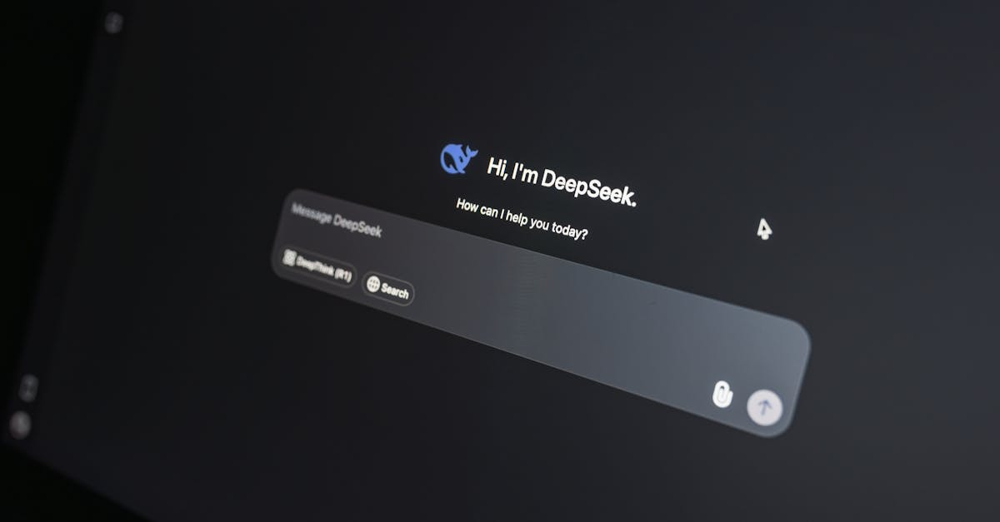
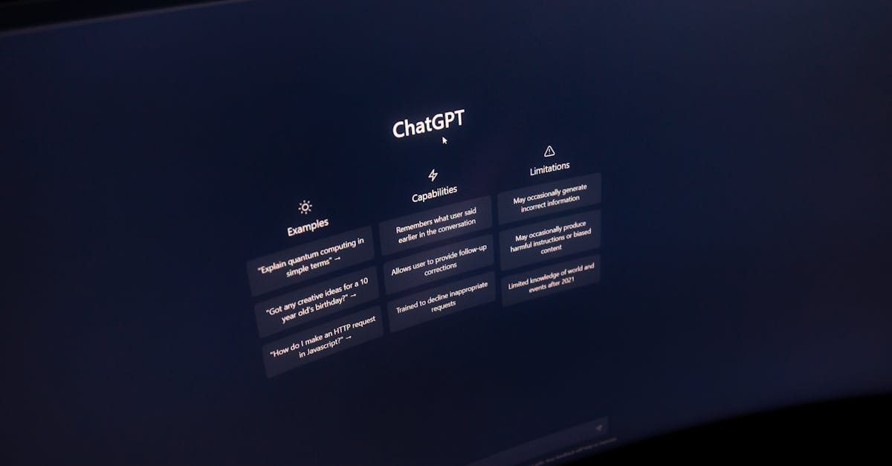
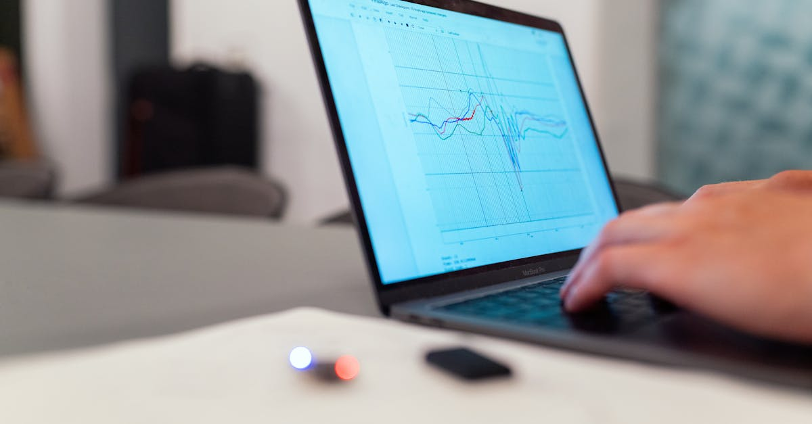

Google Révolutionne l'Interaction IA avec Gemini sur Mac
Dans un mouvement qui souligne l'intégration croissante de l'intelligence artificielle dans nos outils quotidiens, Google a récemment lancé une application dédiée pour macOS de son assistant IA, Gemini. Cette initiative marque une étape significative dans la manière dont les utilisateurs interagissent avec les IA conversationnelles, promettant une fluidité et une efficacité sans précédent. Fini le temps où il fallait jongler entre différentes fenêtres pour poser une question à votre IA ou obtenir une analyse rapide. Avec la nouvelle application Gemini, l'assistant se manifeste via une bulle de chat flottante, accessible instantanément par un raccourci clavier personnalisable (Option + Espace par défaut). Cette approche rend l'IA omniprésente sans être intrusive, s'intégrant harmonieusement dans le flux de travail de l'utilisateur. L'objectif est clair : réduire la friction et maximiser la productivité en plaçant la puissance de Gemini à portée de main, ou plutôt, à portée de clavier. Cette évolution est particulièrement pertinente dans les domaines où la rapidité d'information et d'analyse est cruciale, comme dans le trading de cryptomonnaies, où chaque seconde compte pour saisir les opportunités. L'accessibilité immédiate de l'IA permet aux traders de tester des hypothèses, d'obtenir des résumés de marché ou de vérifier des données complexes en un clin d'œil, sans jamais perdre le fil de leur analyse graphique ou de leurs opérations en cours. L'intégration native sur macOS ouvre également la voie à des interactions plus profondes avec le système d'exploitation, promettant des fonctionnalités futures encore plus sophistiquées.

Une Intégration Profonde : Partage d'Écran et Analyse Contextuelle
Ce qui distingue véritablement la nouvelle application Gemini pour Mac, c'est sa capacité à interagir directement avec le contenu de votre écran. Après avoir accordé les autorisations nécessaires, Gemini peut analyser ce que vous êtes en train de regarder. Imaginez être en train de lire un article sur une nouvelle technologie blockchain, de consulter un graphique de prix complexe ou d'étudier un rapport financier. D'un simple raccourci, vous pouvez demander à Gemini de résumer l'information, d'expliquer un concept obscur, de comparer des données présentées ou même de suggérer des pistes de réflexion basées sur le contenu visible. Cette analyse contextuelle est une véritable révolution pour l'efficacité. Pour les professionnels de la finance et du trading, cela signifie pouvoir obtenir une analyse rapide d'un schéma de prix, comprendre l'impact d'une actualité économique sur un actif spécifique, ou encore vérifier la plausibilité d'une stratégie de trading en temps réel, simplement en partageant l'écran pertinent avec l'IA. La permission est une étape clé, soulignant l'engagement de Google envers la sécurité et la confidentialité des données utilisateur. L'IA n'accède à vos informations qu'avec votre consentement explicite, garantissant que vous gardez le contrôle total. Cette fonctionnalité transforme Gemini d'un simple chatbot en un véritable assistant proactif, capable de comprendre et d'agir sur la base de votre environnement numérique. C'est un pas de géant vers une IA plus intuitive et véritablement utile au quotidien, transformant la manière dont nous consommons et interagissons avec l'information numérique, un avantage indéniable pour quiconque cherche à optimiser ses processus décisionnels, notamment dans l'univers volatile des cryptos.
Au-delà du Chat : Les Cas d'Usage pour le Trading Crypto
Si l'application Gemini sur Mac est une prouesse technologique générale, ses implications pour les passionnés de trading de cryptomonnaies sont particulièrement remarquables. Dans un marché qui évolue à une vitesse fulgurante, l'accès instantané à des informations pertinentes et à des analyses rapides peut faire la différence entre un profit et une perte. L'intégration de Gemini permet, par exemple, de :
- Obtenir des résumés de marché instantanés : Pendant que vous analysez des graphiques complexes, demandez à Gemini de vous fournir un résumé des dernières nouvelles influençant le marché ou un actif spécifique.
- Simplifier l'analyse technique : Partagez un graphique avec Gemini et demandez-lui d'identifier des patterns potentiels, d'expliquer la signification d'indicateurs techniques ou de suggérer des niveaux de support et de résistance basés sur les données visibles.
- Vérifier des informations en temps réel : Face à une annonce soudaine, demandez à Gemini de vérifier la source, de fournir un contexte ou d'évaluer l'impact potentiel sur le marché sans quitter votre plateforme de trading.
- Tester des stratégies de trading : Décrivez une stratégie à Gemini et demandez-lui des retours basés sur des données historiques ou des simulations hypothétiques, le tout via une interface conversationnelle rapide.
- Comprendre la complexité de la DeFi et des NFT : Posez des questions sur des protocoles DeFi complexes, des métriques de projets NFT ou des concepts blockchain, et obtenez des explications claires et concises adaptées à votre niveau de compréhension.
Cette synergie entre une IA avancée et un environnement de trading dynamique ouvre des perspectives fascinantes. Elle permet aux traders, qu'ils soient novices ou expérimentés, de prendre des décisions plus éclairées et plus rapides. L'agent IA, désormais plus accessible que jamais, peut agir comme un véritable copilote, aidant à naviguer dans la complexité et la volatilité du marché des cryptomonnaies, 24h/24 et 7j/7, tout comme les agents IA de trading que nous développons chez CryptoMind AI pour automatiser et optimiser vos investissements.

Sécurité et Confidentialité : La Priorité de Google
L'une des préoccupations majeures lors de l'intégration d'une IA capable d'analyser le contenu de l'écran est sans aucun doute la sécurité et la confidentialité des données. Google semble avoir pris ces préoccupations très au sérieux avec le lancement de Gemini sur Mac. L'application exige un accord explicite de l'utilisateur avant de pouvoir accéder aux informations de l'écran ou du système. Cette approche garantit que l'utilisateur reste maître de ses données et décide quelles informations il souhaite partager avec l'IA. Le processus d'autorisation est clair et transparent, permettant à chacun de comprendre les implications avant d'octroyer les permissions. De plus, Google s'engage à utiliser ces données uniquement dans le but d'améliorer l'expérience utilisateur et de fournir des réponses pertinentes, sans les utiliser à d'autres fins, comme le ciblage publicitaire invasif. Pour les traders, en particulier ceux qui manipulent des informations sensibles ou des stratégies propriétaires, cette garantie de confidentialité est primordiale. Savoir que l'IA ne divulguera pas d'informations confidentielles et que les données partagées sont traitées avec le plus grand soin est essentiel pour établir une relation de confiance. Cette démarche responsable renforce la crédibilité de Google et de son IA, la positionnant comme un outil fiable et sécurisé pour les professionnels qui exigent le meilleur en matière de protection de leurs données, tout en bénéficiant de ses capacités d'analyse avancées. La confiance est la pierre angulaire de toute technologie, et Google semble l'avoir bien compris.
L'Évolution des Assistants IA : Vers une Intelligence Augmentée
Le lancement de Gemini sur Mac n'est pas seulement une nouvelle application ; c'est un aperçu de l'avenir des assistants IA. Il s'inscrit dans une tendance plus large où l'IA passe d'outils réactifs à des partenaires proactifs. Les assistants virtuels deviennent de plus en plus contextuels, capables de comprendre non seulement ce que vous dites, mais aussi ce que vous faites. Cette évolution vers une intelligence augmentée vise à améliorer les capacités humaines plutôt qu'à les remplacer. Pour les professionnels, cela signifie avoir un collaborateur numérique toujours disponible, capable de traiter des tâches répétitives, d'analyser des volumes massifs de données et de fournir des insights précieux, libérant ainsi du temps pour des activités à plus forte valeur ajoutée, comme la stratégie, la créativité ou la prise de décision complexe. Dans le domaine du trading de cryptomonnaies, où l'automatisation et l'intelligence sont déjà des piliers, cette nouvelle génération d'assistants IA promet d'élever encore le niveau. Imaginez un assistant qui non seulement exécute vos ordres selon des règles prédéfinies, mais qui apprend aussi de vos interactions, anticipe vos besoins et vous alerte sur des opportunités ou des risques potentiels basés sur une compréhension approfondie du marché et de vos objectifs. C'est la promesse d'une collaboration homme-machine plus poussée, où l'IA devient un véritable levier de performance. Chez CryptoMind AI, nous croyons fermement en ce potentiel, en développant des agents IA qui exploitent ces avancées pour offrir des solutions de trading toujours plus performantes et accessibles.

Concurrence et Innovations Futures : La Course à l'IA
L'annonce de Google intervient dans un contexte de concurrence féroce sur le marché de l'IA. OpenAI avec ChatGPT, Microsoft avec Copilot, et d'autres acteurs majeurs investissent massivement dans le développement d'assistances IA toujours plus performantes et intégrées. L'approche de Google, en se concentrant sur une intégration profonde et contextuelle directement dans l'environnement de l'utilisateur (ici, macOS), représente une stratégie différenciante. Il ne s'agit plus seulement de conversationalité, mais de véritablement intégrer l'IA dans le flux de travail. La possibilité de partager son écran et d'obtenir une analyse contextuelle est un avantage concurrentiel notable. On peut s'attendre à ce que les autres plateformes répliquent rapidement des fonctionnalités similaires, intensifiant la course à l'innovation. Les prochaines étapes pourraient inclure une personnalisation accrue des agents IA, une meilleure compréhension des intentions de l'utilisateur, et une capacité à interagir avec un éventail encore plus large d'applications et de services. Pour les utilisateurs, cette compétition est une excellente nouvelle, car elle se traduit par des outils plus puissants, plus accessibles et plus performants. Dans le secteur du trading, cela signifie que les plateformes et les outils basés sur l'IA deviendront de plus en plus sophistiqués, offrant des analyses plus fines, des exécutions plus rapides et une gestion des risques plus intelligente. La démocratisation de ces technologies, rendue possible par des initiatives comme celle de Google, ouvre la voie à une nouvelle ère pour l'investissement, y compris dans le monde dynamique et parfois complexe des cryptomonnaies.
Conclusion : Gemini sur Mac, un Aperçu Concret de l'IA Utile
L'application Gemini pour Mac représente bien plus qu'une simple mise à jour logicielle. C'est une démonstration tangible de la manière dont l'intelligence artificielle peut s'intégrer de manière transparente et bénéfique dans notre vie numérique. En offrant un accès rapide, une analyse contextuelle et un engagement fort envers la sécurité, Google positionne Gemini comme un outil puissant pour améliorer la productivité et l'efficacité, que ce soit pour des tâches professionnelles générales, des analyses financières complexes ou le trading de cryptomonnaies. L'accessibilité immédiate via un raccourci clavier et la capacité d'interagir avec le contenu de l'écran transforment la manière dont nous pouvons exploiter la puissance de l'IA au quotidien. Cette évolution confirme la trajectoire vers une intelligence augmentée, où l'IA agit comme un véritable partenaire, amplifiant nos capacités. Pour les acteurs du monde de la finance et des cryptos, où la rapidité d'information et la prise de décision éclairée sont essentielles, des outils comme Gemini, et plus spécifiquement des agents IA dédiés au trading comme ceux développés par CryptoMind AI, deviennent indispensables. L'avenir est déjà là, et il est propulsé par l'IA.